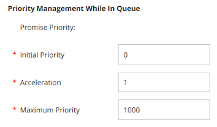

Configure Priority for a Skill for Static Delivery
Configure Priority for an ACD Skill
Required permissions: Skills Edit
Important: If your email skill has Email Parking enabled, the priority of an email interaction accelerates +1 each time an agent unparks it, even if Acceleration and Maximum Priority are each set to 0.
You can control the priority of interactions associated with a particular skill. You choose the initial priority when the interaction enters the queue and the rate the priority increases over time. This gives you control over which interactions route first when the queue is full. This method only works for ACD skills. For your digital skills, you need to use the method described in the next task.
Learn more from a use case:
Classics, Inc., has a contact center on the Longbourn Estate. The center handles accounting calls from employees and from merchants and vendors with whom Classics does business. Mr. Bennet, the center supervisor, wants to make sure that vendor calls always have priority over other calls.
When he creates the voice skills for the center, he assigns an initial priority between 101-200 to skills for vendor calls. He assigns an initial priority of 001-100 to his other skills. Here's how this would impact two calls in different types of skills:
- Call #1 comes in on the Vendor skill, which has a priority of 110.
- Call #2 comes in on the Employees skill, which has a priority of 10.
- When an agent becomes available, Call #1 will be delivered first since it has the higher priority.
Mr. Bennet also wants to control how the priority changes for calls over their time in queue. To do this, he uses acceleration. With this setting, the formula becomes Overall Priority = (Time * Acceleration)+ Initial Priority. Here's how this setting impacts two calls that have been in queue for the same amounts of time: - Call #1 comes in on the Vendor skill, which has a priority of 110. The call has been in queue for 4 minutes. It currently has a priority of 110. - Call #3 comes in on the Merchants skill, which also has a priority of 110. Because Mr. Bennet wants calls from merchants to be answered in the shortest time possible, he has also assigned an acceleration of 10 to the Merchants skill. The call has been in queue for 4 minutes. It currently has a priority of 150. - When an agent becomes available, Call #3 will be delivered first since it has the higher priority.

- Click the app selector and select ACD.
- Go to Contact Settings > ACD Skills.
- Click the inbound ACD skill you want to edit.
- Click Edit.
-
Set the Initial Priority, Acceleration, Maximum Priority. If you're creating a Personal Connection skill with priority blending enabled, set the Initial Priority, Priority Initial Priority, and Reschedule Priority instead.
Learn more about fields in this step:
Field Details Initial Priority Enter a numeric value you want to set as the base level priority for all contacts in an inbound skill or for fresh records and retries in an outbound skill (callbacks always take priority and are not affected by this setting). The default value is 0.
Acceleration Enter a numeric value to determine how quickly the priority of the skill increases. For every minute a contact stays in queue, the priority increases by the value you configure for Acceleration. The default value is 1. The minimum value is 0 and the maximum priority is the value configured in the Maximum Priority field.
For example, if the Initial Priority is 4, and you set Acceleration to 1, then with each passing minute that the contact is not handled, the priority increases by one. In this example, if the contact has been in queue for three minutes, then the priority will be raised to 7.
Priority increments in seconds. For example, when Acceleration is 1, a contact's priority increases by 0.5 after 30 seconds in queue.
For Personal Connection skills, set this value to 0 because there is no queue of contacts.
You can set Initial Priority for one skill lower than another skill, but if you set Acceleration for that skill higher, it can jump spots in the queue. For example, you set Initial Priority for Skill A to 1 and Acceleration to 5. You set Initial Priority for Skill B to 3 and Acceleration to 1. Initially, a contact for Skill B will be first in queue because it has a priority of 4, but after one minute, Skill A will take its place at the top because its priority will be 6.
CXone Mpower combines the acceleration value with the time the contact has been in queue and the initial priority using the formula Overall Priority = (Time * Acceleration) + Initial Priority.
Maximum Priority Enter a numeric value to determine the maximum priority a contact can have. If you choose not to use Acceleration, this value should match the Initial Priority. The default value is 1000. Important: If you're creating an email skill with email parking enabled, the priority of an email interaction accelerates +1 each time an agent unparks it, even if Acceleration and Maximum Priority are each set to 0. -
To test the priority of the skill relative to others, Configure Priority for a Skill for Static Delivery.
- Click Done.
Configure Priority for a Digital Skill
Digital interactions route differently from ACD interactions. Because of this, you need to configure their priority of your digital skills in a different way. If you switch to a dynamic delivery routing strategy, then you can use the method described in the previous task to manage the priorities of both ACD and digital interactions.
Configure Filters for Digital Queues and Sub-Queues
Filters provide the rules that tell Digital Experience how to route interactions to your agents' digital inboxes. When interactions come in, the system compares them to the rules for each queue, starting with the first queue in the list. It continues until it finds a match.
If a routing queue has sub-queues, Digital Experience compares interactions to each sub-queue's filter rules until it finds a match.
If an interaction matches the rules of more than one routing queue, Digital Experience uses the highest-priority queue in the list. For example, Mowgli wants Facebook complaints about jungle cats to go to TheJungleFB queue and not the general complaint queue, so he makes sure TheJungleFB queue is higher in the priority list.
A queue must have at least one filter. Agents in the queue must have permissions for the channels that route messages to the queue.
Example: Contact center administrator Mowgli Kipling wants to avoid routing live chat cases to queues when agents are offline. So, he creates a queue filter called Time Resolver. Then he adds the Date and time rule under Condition type. He selects Exclude selected days and times. He reviews when the agents assigned to this live chat channel queue are scheduled and selects the dates and times when none of them are online. This ensures that no cases are assigned to this live chat queue when the agents assigned to it are offline. This specific queue filter only applies to live chat. Other channels route based on agent status.
- Click the app selector and select ACD.
- Go to Digital > Routing Queues.
- Locate the routing queue or sub-queue you want to work on and click the associated Filters link.
- Click Add routing queue filter.
- Enter a Filter name.
- From the Filtered case priority drop-down, select the priority that cases should have if included in this filter. The smaller the number, the lower the priority (0 is the smallest number, so it is the lowest priority). This overrides the Prioritize routing general routing setting.
- Click Save.
-
Select a Condition type from the drop-down. Click Create condition for selected type. The next page will allow you to configure the criteria for the condition. After configuring a condition, you can add more.
Learn more about additional configuration for each condition type:
Field Details Included Channels Rule Includes the selected channels in the filter. The next page displays the list of channels you can choose from. You can search for the one you want. Click Add for each channel you want to include in the filter. Changes are saved automatically. Included tags rule Includes the selected tags in the filter. The next page displays the list of tags you can choose from. You can search for the one you want. Click Add for each channel you want to include in the filter. Changes are saved automatically. Excluded tags rule Excludes the selected tags from the filter. The next page displays the list of tags you can choose from. You can search for the one you want. Click Add for each channel you want to exclude from the filter. Changes are saved automatically. Included sentiments rule Includes the selected sentiments in the filter. The next page allows you to select checkboxes for which sentiment or sentiments you want to include in the filter. You can choose any combination of Negative, Neutral, or Positive. Included customer browser languages rule Includes the selected customer browser languages in the filter. The next page allows you to select the checkboxes for the customer browser languages you want included in the filter. Check the desired languages, then scroll to the bottom and click Save.
Note that the checkboxes do not appear in alphabetical order. Only check boxes that the agent assigned to the routing queue can manage.
Included source values rule Includes the specified source values (where the interaction came from) in the filter. The next page allows you to enter any URLs you want to include content from. Separate multiple entries with commas. Customer Card custom fields Includes specific custom fields values from a customer in the filter.
Depending on the custom field, the next page allows you to enter values in a text field or select values from a drop-down. In text fields, you can separate multiple entries with commas.
Case custom fields Includes specific custom field values from a case in the filter.
Depending on the custom field, the next page allows you to enter values in a text field or select values from a drop-down. In text fields, you can separate multiple entries with commas.
Twitter followers rule Includes cases from X in the filter based on number of followers the author has. For example, you might create a queue with filter rules that gives priority handling to negative mentions of your organization by X users with a large number of followers (influencers).
The next page allows you to configure the criteria for how many followers the X account should have to be pulled into the filter. Select an operator from the drop-down field and enter a number in the text box, then click Save.
Included subjects rule Includes certain topics assigned to case through natural language processing (NLP).
The next page allows you to enter any subjects you want to include content from. Separate multiple entries with commas. This allows you to automate routing of cases based on subject matter.
Excluded subjects rule Excludes certain topics assigned to case through natural language processing (NLP).
The next page allows you to enter any subjects you want to exclude. Separate multiple entries with commas. This allows you to automate routing of cases based on subject matter.
Custom rule Includes a URL endpoint to validate data against another source. The next page allows you enter a URL endpoint. Use the documentation link in the administration portal to create this type of custom rule, or talk to your account manager.
For example, you might configure a custom rule that validates order numbers mentioned in Facebook messages against your order database to help determine whether a negative comment is real or fraudulent.
Date and time rule Routes cases based on date and time settings.
The next page allows you to set the following criteria:
- Include or exclude
- Day of the week or date range
- Up to three time slots
For example, you could set up three queues with the same filter rules except for date and time. This would allow you to route cases for a channel to different agents based on the shift they work.
Include based on Post IDs Includes any cases from the specified Post ID. The Post ID is based on the external platform you are referencing.
The next page allows you to enter any Post IDs you want to include content from. Separate multiple entries with commas.
Exclude based on Post IDs Excludes any cases from the specified Post ID. The Post ID is based on the external platform you are referencing.
The next page allows you to enter any Post IDs you want to exclude content from. Separate multiple entries with commas.
-
If you added multiple filters, use the up and down arrows to order them. As with queues, incoming cases are compared to the first filter in the list, then the next, and so on down the list. Therefore, the filter at the top should be the most specific and the filter at the bottom should be the broadest.
Change Queue Priority
You can edit a queue to change its Order number, which changes its priority. Priority determines which queue a message routes to if it meets the criteria for more than one queue. The queue that's closer to the top has higher priority.
On the Routing Queues page, you can use the arrows in the Order column to move the queue up or down in priority. To change the priority of a queue by more than one place at a time, click Edit and enter a number in the Sorting Order field.